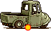
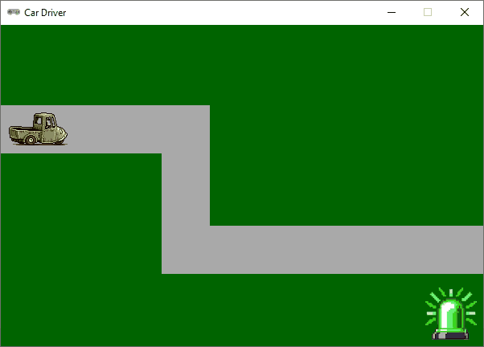

Op de weg blijven#
Het idee van Car Driver is dat je met je autootje op de weg blijft. In dit deel van de tutorial gaan we de weg tekenen en detecteren wanneer de auto van de weg af raakt.
Rectangles#
Voor het tekenen van de wegen gebruiken we rechthoeken. Voor rechthoeken gebruik je in Pygame Zero Rect objecten. Uitgebreide informatie over deze objecten vind je in de Pygame documentatie. Omdat een weg uit meerdere rechthoeken kan bestaan, gebruiken we een lijst om de rechthoeken van de weg op te slaan.
12# ACTORS
13car_images = ['car_0', 'car_1', 'car_2', 'car_3', 'car_4']
14car = Actor(car_images[0])
15car.images = car_images
16car.fps = 15
17car.pos = (WIDTH // 2, HEIGHT // 2)
18car.speed = 3
19car.dx = 0
20car.dy = 0
21car.direction = RIGHT
22
23# ROADS
24ROAD_WIDTH = 60
25road_rects = []
26
27################################
28# EVENT HANDLERS
29################################
In regel 24 definiëren we een constante ROAD_WIDTH die de breedte van de weg aangeeft. In regel 25 maken we een lege lijst road_rects aan waarin we later de rechthoeken van de weg gaan opslaan.
Het is handig om voor het creëren van de rechthoeken die de weg vormen een aparte functie te maken. We noemen deze functie build_roads().
23# ROADS
24ROAD_WIDTH = 60
25road_rects = []
26
27################################
28# BUILD ROADS
29################################
30def build_roads():
31 road_rect = Rect((0, 100), (200, ROAD_WIDTH))
32 road_rects.append(road_rect)
33 road_rect = Rect((200, 100), (ROAD_WIDTH, 150))
34 road_rects.append(road_rect)
35 road_rect = Rect((200, 250), (WIDTH - 200, ROAD_WIDTH))
36 road_rects.append(road_rect)
37
38################################
39# EVENT HANDLERS
40################################
De functie build_roads() maakt drie rechthoeken aan die samen de weg vormen. Uiteraard kun je zelf andere rechthoeken maken om een andere weg te creëren; gebruik je fantasie! Elke rechthoek wordt toegevoegd aan de lijst road_rects zodat we er later mee kunnen werken.
In de draw() functie tekenen we alle rechthoeken in de lijst op de volgende manier:
69################################
70# DRAW()
71################################
72def draw():
73 screen.fill('darkgreen')
74 for road_rect in road_rects:
75 screen.draw.filled_rect(road_rect, 'darkgrey')
76 car.flip_x = (car.direction == LEFT)
77 car.draw()
Deze regels 74 en 75 kun je vrij letterlijk naar het Nederlands vertalen: ‘voor elke rechthoek in de lijst van wegrechthoeken, teken een gevulde rechthoek op het scherm met de kleur donkergrijs’.
Wanneer je nu de code zou runnen, dan zie je nog geen wegen. Dat komt doordat we de functie build_roads() nog niet hebben aangeroepen. Die aanroep moet bij aanvang van het spel als eerste gebeuren, dus we plaatsen hem onderaan de code in het hoofdprogramma:
79################################
80# UPDATE()
81################################
82def update():
83 car.x += car.dx
84 car.y += car.dy
85 if car.dx != 0 or car.dy != 0:
86 car.animate()
87
88################################
89# MAIN
90################################
91build_roads()
Collision detection#
Om te detecteren of het autootje zich op de weg bevindt, moeten we controleren of het midden van de auto binnen een van de rechthoeken in de lijst road_rects ligt. Dat doen we met behulp van de methode collidepoint() van de Rect objecten. Deze methode controleert of een bepaald punt binnen de rechthoek ligt en geeft True terug als dat het geval is, en False als dat niet het geval is.
Eerst doen we een kleine aanpassing in regel 14, waarin de car Actor wordt gedefinieerd:
12# ACTORS
13car_images = ['car_0', 'car_1', 'car_2', 'car_3', 'car_4']
14car = Actor(car_images[0], anchor = ('center', 'bottom'))
15car.images = car_images
16car.fps = 15
17car.pos = (WIDTH // 2, HEIGHT // 2)
18car.speed = 3
19car.dx = 0
20car.dy = 0
21car.direction = RIGHT
Hiermee stellen we het midbottom punt van de sprite in als ankerpunt. Vanaf nu verwijzen de car.pos eigenschap en de car.x en car.y eigenschappen niet meer naar het midden van de sprite maar naar dit nieuwe ankerpunt. Dat is een logischer punt om te gebruiken voor de collision detection, omdat dat punt zich op de weg bevindt wanneer de auto op de weg staat.

Voor de collision detection maken we een nieuwe functie is_on_road() die controleert of het ankerpunt van de auto binnen een van de rechthoeken in de lijst road_rects ligt. Deze functie geeft True terug als dat het geval is, en False als dat niet het geval is.
27################################
28# BUILD ROADS
29################################
30def build_roads():
31 road_rect = Rect((0, 100), (200, ROAD_WIDTH))
32 road_rects.append(road_rect)
33 road_rect = Rect((200, 100), (ROAD_WIDTH, 150))
34 road_rects.append(road_rect)
35 road_rect = Rect((200, 250), (WIDTH - 200, ROAD_WIDTH))
36 road_rects.append(road_rect)
37
38################################
39# IS ON ROAD?
40################################
41def is_on_road():
42 for road_rect in road_rects:
43 if road_rect.collidepoint(car.pos):
44 return True
45 return False
De is_on_road() functie doorloopt alle rechthoeken in de lijst road_rects en controleert of het ankerpunt van de auto binnen een van deze rechthoeken ligt. Als dat het geval is, geeft de functie True terug. Als geen van de rechthoeken het ankerpunt bevat, geeft de functie False terug.
Om deze functionaliteit zichtbaar te maken in het spel, voegen we een emergency_light Actor toe die groen of rood is, afhankelijk van of de auto op de weg staat of niet.
15# ACTORS
16car_images = ['car_0', 'car_1', 'car_2', 'car_3', 'car_4']
17car = Actor(car_images[0], anchor = ('center', 'bottom'))
18car.images = car_images
19car.fps = 15
20car.pos = (WIDTH // 2, HEIGHT // 2)
21car.speed = 3
22car.dx = 0
23car.dy = 0
24car.direction = RIGHT
25
26emergency_light = Actor('emergency_light_green')
27emergency_light.pos = (WIDTH - 40, HEIGHT - 40)
In de draw() functie tekenen we deze Actor als volgt:
81################################
82# DRAW()
83################################
84def draw():
85 screen.fill('darkgreen')
86 for road_rect in road_rects:
87 screen.draw.filled_rect(road_rect, 'darkgrey')
88 car.flip_x = (car.direction == LEFT)
89 car.draw()
90 if is_on_road():
91 emergency_light.image = 'emergency_light_green'
92 else:
93 emergency_light.image = 'emergency_light_red'
94 emergency_light.draw()
En daarmee is Car Driver zo goed als klaar. Om het helemaal af te maken, wijzigen we de startpositie van het autootje zodat hij op de weg staat. Het is namelijk wat vreemd als je het spel start en de rode lamp al brandt omdat de auto van de weg af staat.
12# ACTORS
13car_images = ['car_0', 'car_1', 'car_2', 'car_3', 'car_4']
14car = Actor(car_images[0], anchor = ('center', 'bottom'))
15car.images = car_images
16car.fps = 15
17car.pos = (50, 150)
18car.speed = 3
19car.dx = 0
20car.dy = 0
21car.direction = RIGHT

Zoals gezegd is Car Driver nog geen echte game, maar je zou dat er wel van kunnen maken door meer game elementen toe te voegen. Je zou bijvoorbeeld kunnen programmeren dat de auto binnen een bepaalde tijd een doel moet bereiken zonder van de weg af te raken. Of overstekende voetgangers die je moet ontwijken.